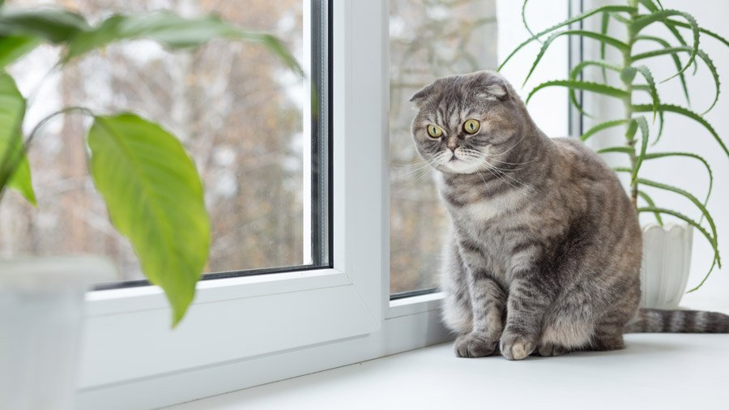

Краткое описание породы
Шотландские вислоухие кошки (иначе их порода звучит как скоттиш-фолд) – домашние питомцы среднего размера, их вес колеблется в пределах 3-6 кг, высота в холке около 30 см.
Отличительная черта этих животных – небольшие ушки, устремленные вперед, с несколько опущенными кончиками, огромные внимательные глаза, обтекаемые формы тела и своеобразный скрипучий голос.
Выведенные в 60-е годы XX столетия, шотландские вислоухие могут иметь как короткую бархатистую шерсть, так и шелковистую полудлинную.
Интересно, что у кошек шотландских вислоухих могут рождаться котята как с опущенными ушами, так и с обычными.
У тех кошек, чьи ушки во время взросления не приняли характерную для скоттиш-фолдов наклонную форму, называют шотландскими прямоухими (или скоттиш-страйт).
Родина скоттиш-фолдов – Шотландия, о чем, конечно, понятно из названия породы.
Характеристики породы
| Название |
шотландская вислоухая кошка |
Страна
происхождения: |
Шотландия |
| Время зарождения породы: |
1961 год |
| Вес: |
4-6 кг |
| Цена котят: |
100-450$ |